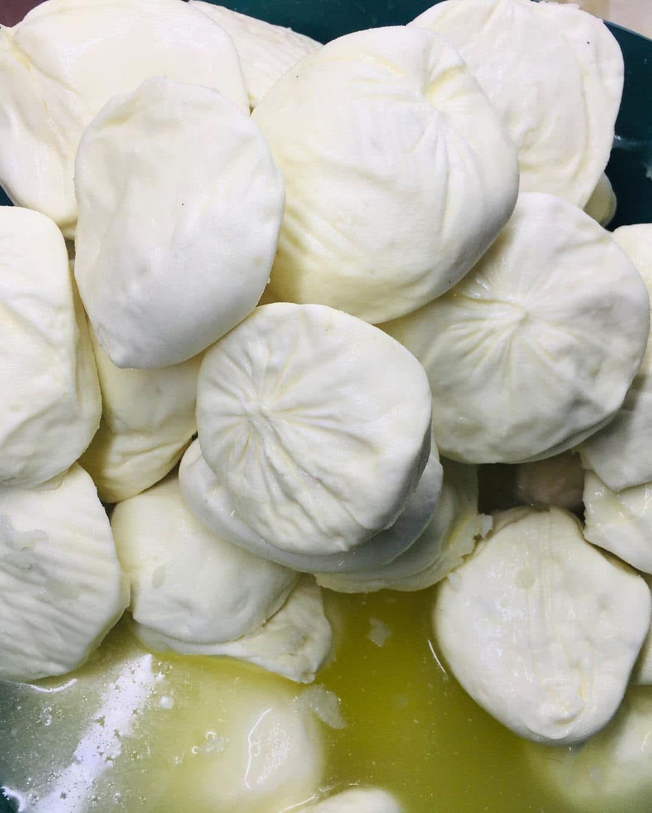
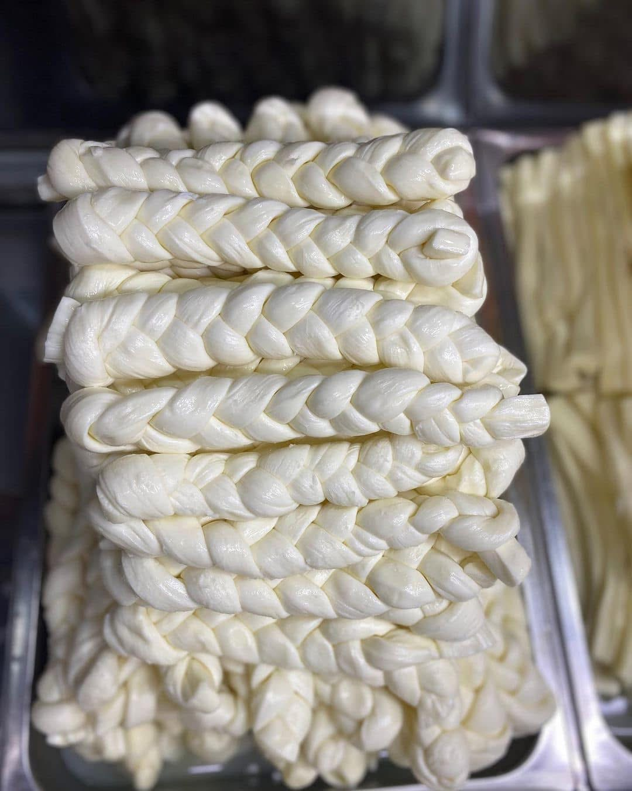
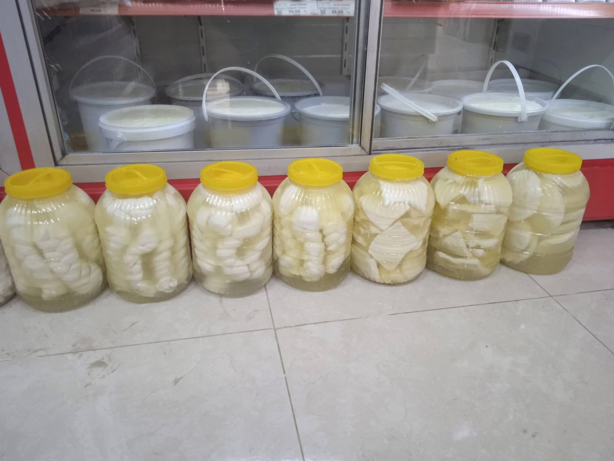
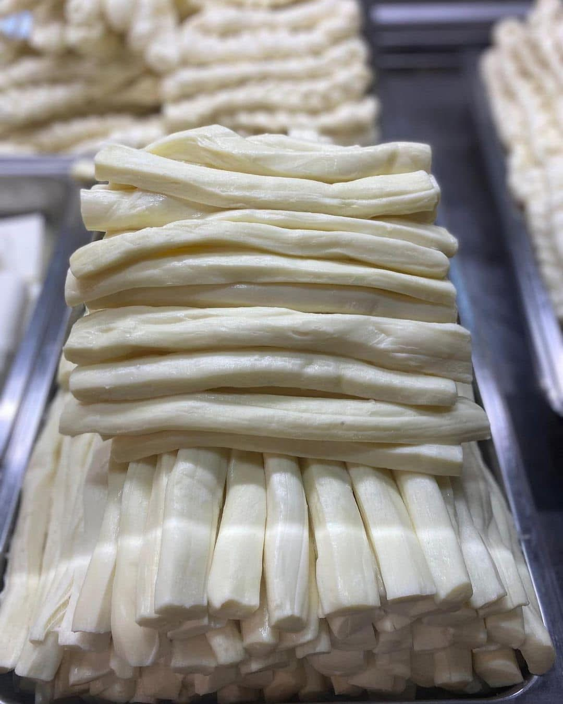
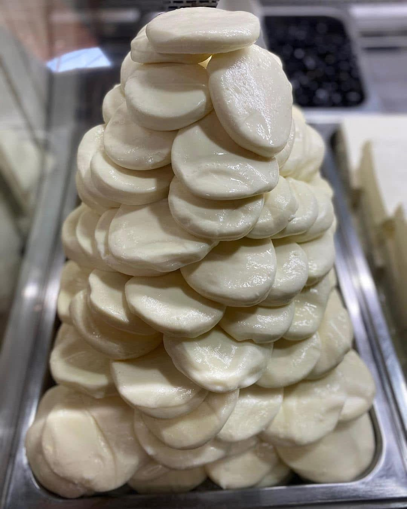
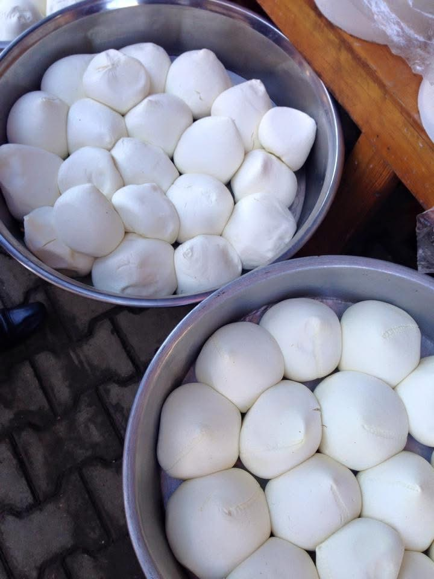

Tam Yağlı Az Tuzlu Peynir
Yumuşak dokulu, tam yağlı sofralık peynir.
Güncel fiyat için WhatsApp’tan yazınDOĞALLIK · LEZZET · GÜVEN
Geleneksel yöntemlerle hazırlanan peynir çeşitlerimizi, doğallığını koruyarak sofranıza ulaştırıyoruz.

ÜRÜNLERİMİZ
Her biri el emeğiyle ve aynı özenle hazırlanan yöresel peynir çeşitlerimiz.

Yumuşak dokulu, tam yağlı sofralık peynir.
Güncel fiyat için WhatsApp’tan yazın
Geleneksel salamura yöntemiyle hazırlanır.
Güncel fiyat için WhatsApp’tan yazınEl emeğiyle örülen yöresel peynir.
Güncel fiyat için WhatsApp’tan yazın
Kahvaltı ve atıştırmalık için taze lezzet.
Güncel fiyat için WhatsApp’tan yazın
Dolgun kıvamlı geleneksel köy peyniri.
Güncel fiyat için WhatsApp’tan yazın
Yumuşak, taze ve doğal lezzet.
Güncel fiyat için WhatsApp’tan yazınBİZİM HİKÂYEMİZ
YM Süt Çiftliği olarak doğanın sunduğu en güzel lezzetleri güven ve kaliteyle buluşturuyoruz.
SİPARİŞ & İLETİŞİM
Ürünlerimiz ve güncel fiyatlar için WhatsApp’tan bize ulaşabilirsiniz.